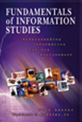

|  |
| About IR |
| Editors |
| Author instructions |
| Copyright |
| Author index |
| Subject index |
| Search |
| Reviews |
| Register |
| Home |
June Lester and Wallace C. Koehler Fundamentals of information studies: understanding information and its environment. New York: Neal-Schuman Publishers, Inc., 2003. xx, 306 p. ISBN 1 55570 474 3. $55.00
It is always interesting for teachers of information-related disciplines to get their hands on new textbooks or study related publications on their subjects. This book belongs to this class of publications.
The authors define the goal of their work in the following way: "The text is intended to provide a broad-based introduction to the information field." (p. xii)
It was developed from a teaching aid for an undergraduate Web-supported course for students of the Library and Information studies department (University of Oklahoma). In general the textbook fulfils the promise. On the other hand, it illustrates that 'information studies' (or the field) can be understood in different ways. So, readers looking for a broad introductory text on the classical topics of information studies like information users and needs, knowledge organisation, information search and retrieval, information resources and management, development of information services, etc. and the relations between these areas, will be disappointed. The book does not address any of these issues. Rather it gives an overview of the major issues of information policies and the functions of information in society. The authors define the subjects covered by them in the preface and the coverage is legitimate. However, in my opinion, the omission of the problems of information users' behaviour is a shortcoming for an introduction to information studies. The fascination with information technology, resources, and policy as well as the importance of professional issues tends to obscure the main goal and reason, for which information professionals should work—people and their problems. One may say that a user is intrinsically present throughout the book, and that will be true. But I would like to see an explicit and extended statement about the importance and a definition of this particular problem area in a textbook for future information professionals.
Otherwise, the textbook is solid, interesting, and useful for those studying and teaching courses on information policy, information society, or information infrastructure. The information field is really understood in the broadest sense and includes education and research, mass media, organisational communication and documentation, and specialised information institutions (libraries, information centres and services, etc.). There is a strong emphasis on information technology and its impact on changes in information field, but the balance is maintained by sought by discussing the social, political, and moral issues and different solutions that emerge regardless of technology.
The feature that I appreciated most is the attempt to demonstrate controversy of opinions and positions relating to most of the introduced problems, be it the commodification of information, copyright, or information futures. There are also some useful repetitions, because the same basic problems are discussed in several chapters revealing different aspects—economic, political, technological, and ethic. The authors also introduce a variety of approaches to information policy issues in different countries, though the USA material and practices naturally dominate the text. Therefore, on the whole, this introductory text provides the picture of complexity of information-related issues in the modern world without making the book too complicated.
On the other hand, I find that the chapter on information professions suffers from a total confusion most probably because of the wish to take into account a variety of practices. The authors try to introduce some kind of criteria for classification of information professions based on the main information processes (creation, transmission, management, manipulation and interpretation, storage) and the historically prevailing means of dissemination (oral, written/print, electronic). From my point of view the basic principle applied is rather faulty as most of the information professions are of integrative nature (i.e., they cover several information processes), but the authors also do not make any difference between professions, jobs, disciplines, and positions. They end by dividing the library profession into several separate units and introducing positions of CIO (chief information officer) and CKO (chief knowledge officer) as new professions. Several management related professions are included, but not information manager. 'Special librarian' occurs under the storage-related professions (p.123), but may work in 'information management consulting firms'. Of course, this is not an easy topic, but even the references to the transition period in the development of information professions does not excuse the basic flaws of this part of the book.
The structure of each chapter might help the teachers as well as students. I was very glad to find the same exercises at the beginning of the chapter as those that I use in the classroom as an introduction to a particular topic. There are lists of 'Questions for consideration', references, and additional sources at the end of each chapter. At the end of the book there is a helpful index and a glossary. The latter is a little disappointing as most of the terms are technological and the principle of the compilation is not quite clear.
One small complaint: the book has an associated Web site, but when the casual visitor clicks on the icon, he or she is presented with a login window and if this is ignored, an error message page is delivered. This is hardly a good way to attract potential purchasers.
Without regard to the recorded shortcomings, I would consider the "Fundamentals of information studies" a useful educational source for several undergraduate courses concerning modern information policy.
Dr Elena Macevičiūtė
Högskolan i Borås and
Vilnius University
January 2004
How to cite this review
Macevičiūtė, E. (2003) Review of: Lester, June and Koehler, Wallace C., Jr. Fundamentals of information studies : understanding information and its environment. New York: Neal-Schuman Publishers, Inc., 2003. Information Research, 9(2), review no. R124 [Available at: http://informationr.net/ir/reviews/revs124.html]